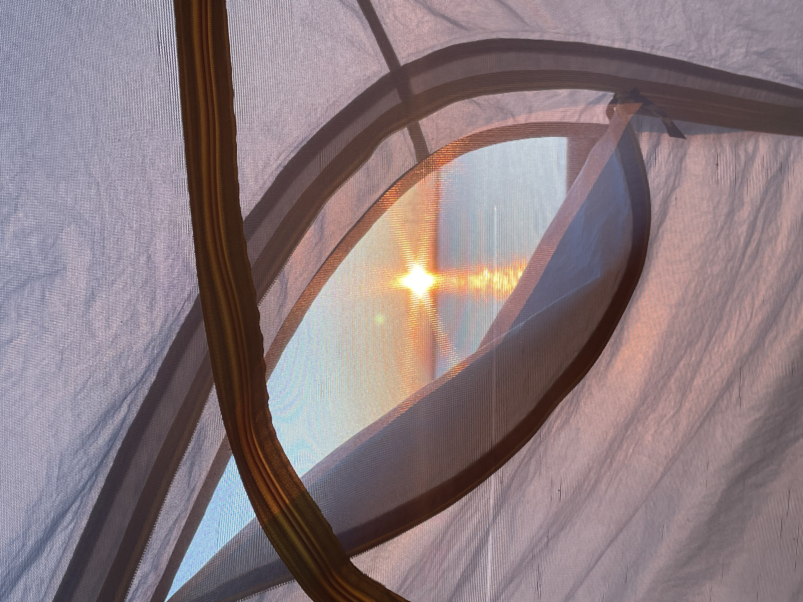
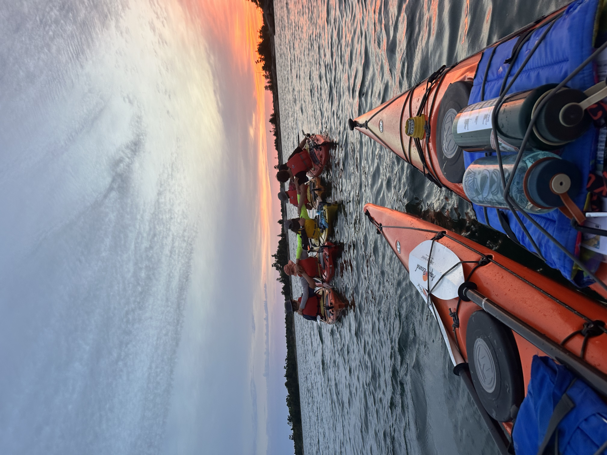
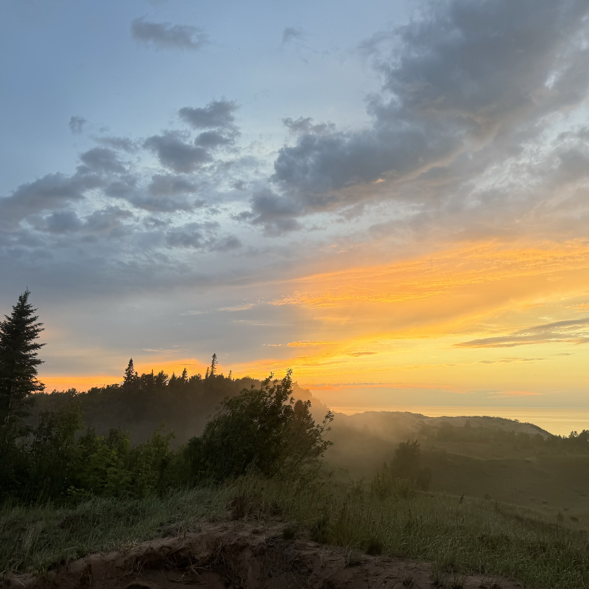
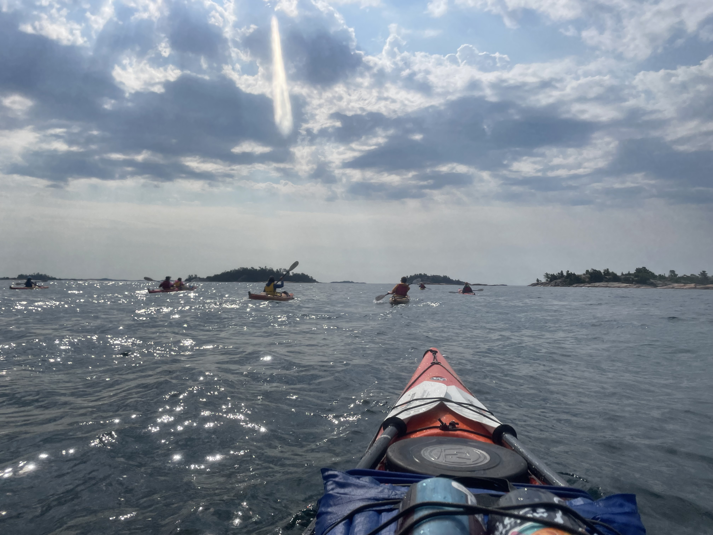
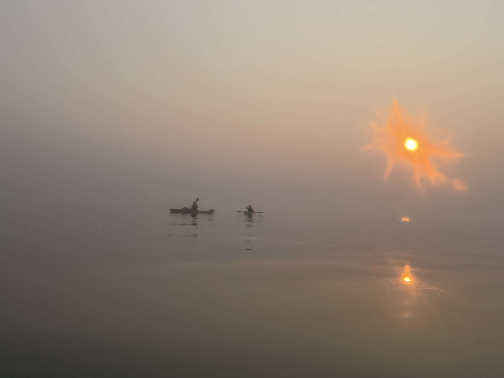
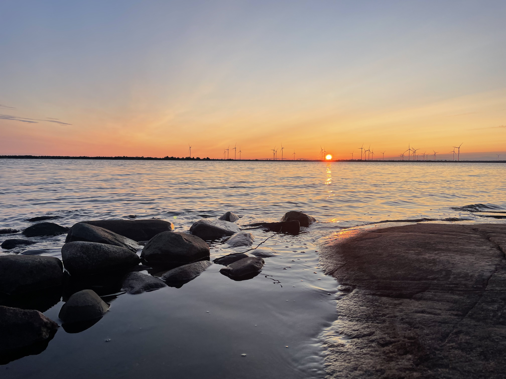
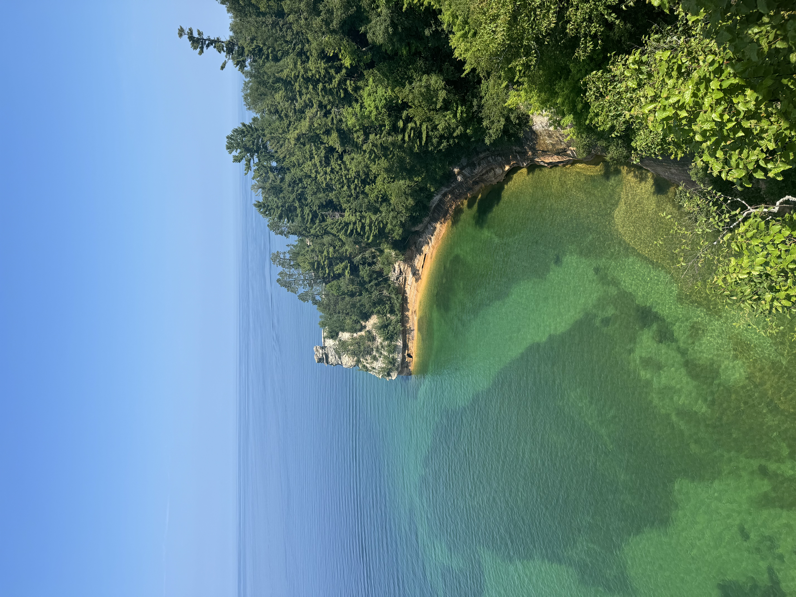
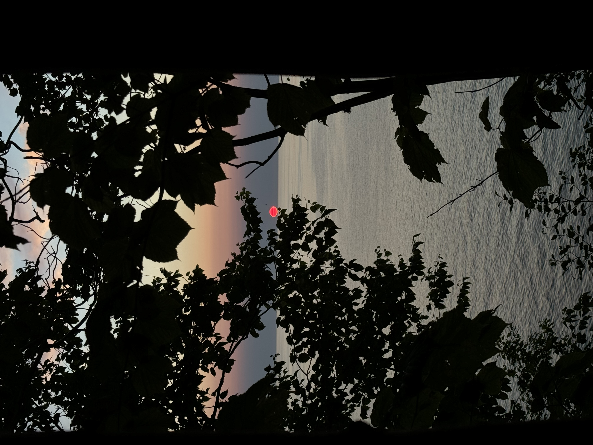

American Youth Foundation
When I was not enrolled in courses for engineering, I spent a lot of my time outdoors, primarily working as a trip leader and facilitator for the American Youth Foundation. I have lead trips across lower and upper Michigan, as well as in the Georgian Bay in Ontario, Canada. These adventures have provided me with a chance to witness some of the most beautiful places in the world. Here is a selection of the beautiful views I've stood before.







